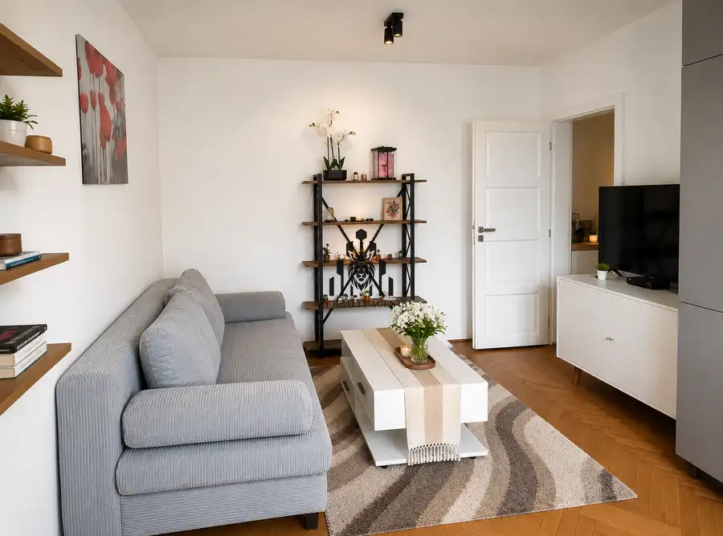
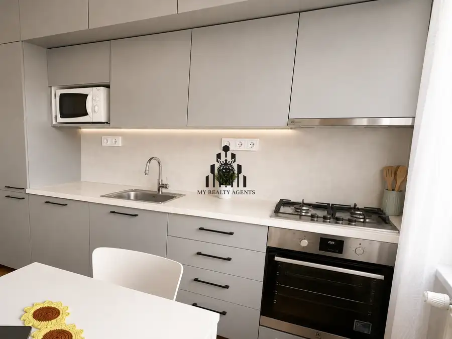
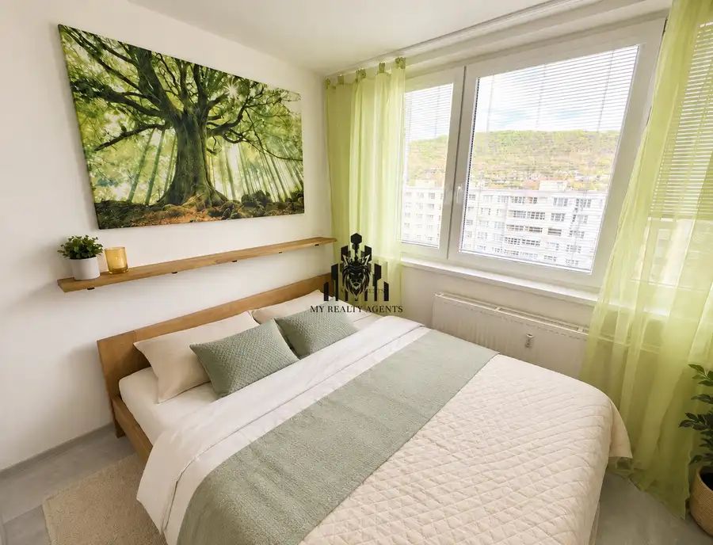
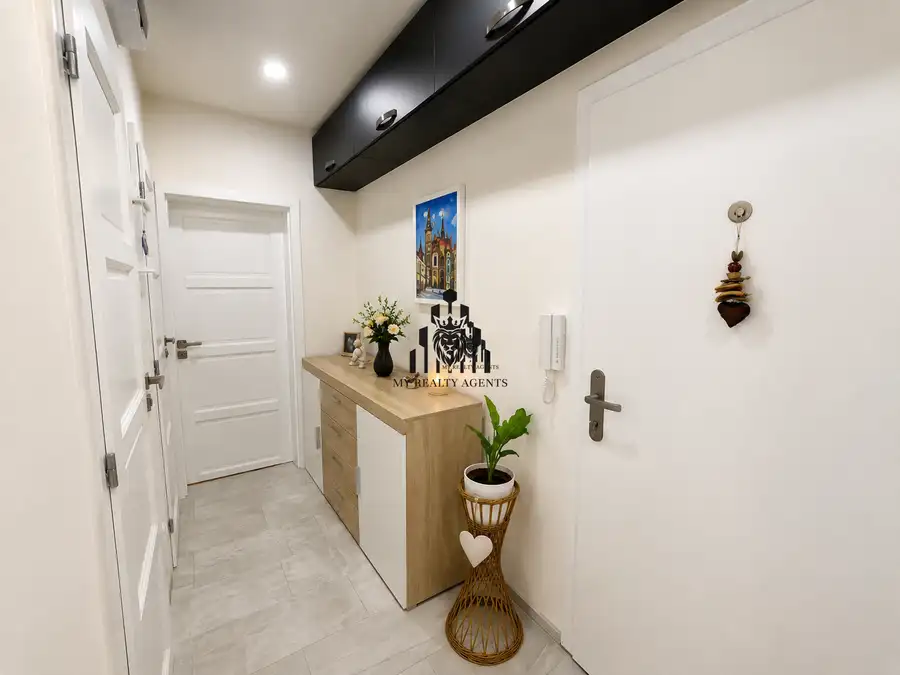

Výborne situovaný 1,5-izbový byt s pivnicou a kumbálom | Bukovecká
Nad jazerom, Košice




- Dispozícia2-izbový
- Plocha40 m²
- Poschodie8. z 10
- StavKompletná rekonštrukcia
- VlastníctvoOsobné
- Energetická triedaB
O nehnuteľnosti
MY REALTY AGENTS exkluzívne ponúka na predaj útulný a moderne riešený 1,5-izbový byt, ktorý predstavuje ideálnu kombináciu komfortného bývania a výbornej investičnej príležitosti. Byt sa nachádza na začiatku obľúbeného sídliska Nad jazerom, na Bukoveckej ulici – v lokalite, ktorá spája mestský život s blízkosťou prírody a jazera.Mimoriadna cena 154 900 € platí len do 15. 08. 2026. Majiteľ uprednostní kupujúceho s financovaním z vlastných zdrojov, čo môže urýchliť celý proces predaja.ZÁKLADNÉ INFORMÁCIE:• výmera bytu: 40 m²• praktická dispozícia 1,5-izbového bytu• 8. poschodie z 10• bytový dom v dobrej kondícii• k bytu patrí pivnica aj kumbálBENEFITY BYTU: •ideálna voľba pre jednotlivca, mladý pár alebo ako investícia na prenájom•oddelená spacia časť poskytuje viac súkromia a komfortu•svetlý interiér s príjemnou atmosférou•dostatok úložného priestoru vďaka kumbálu a pivnici•praktická dispozícia s efektívne využitým každým metrom štvorcovým•bez potreby dalších investíciíLOKALITA – NAD JAZEROM / BUKOVECKÁ:• začiatok sídliska = rýchla dostupnosť do centra mesta• blízkosť jazera a prírody – ideálne na relax, šport a prechádzky• kompletná občianska vybavenosť v okolí (MHD, obchody, služby)• pokojné prostredie s dobrou komunitouCena: 154 900 €(vrátane provízie, právneho servisu a bezpečného prevodu)Kontakt na makléra: Martin Tkáč – +421 908 158 068 | tkac@myrealtyagents.sk
Parametre
- Bezpečnosť
- Bezpečnostné dvere
- Cena vrátane energií
- Nie
- Druh
- 2 izbový byt
- Dátum zverejnenia
- 25. 04. 2026
- Energetický certifikát budovy
- B
- Orientácia
- Juhovýchodná
- Podlažie
- 8
- Počet nadzemných podlaží
- 10
- Počet pivníc
- 1
- Počet spální
- 1
- Stav nehnuteľnosti
- Kompletná rekonštrukcia
- Telekomunikácie
- Optická sieť
- Typ
- Predaj
- Typ konštrukcie
- Panelová
- Umiestnenie
- Ďalšie nadzemné podlažie
- Vlastníctvo
- Osobné
- Vybavenie
- Špajza, Pivnica
- Vykurovanie
- Ústredné
- Úžitková plocha
- 40 m²